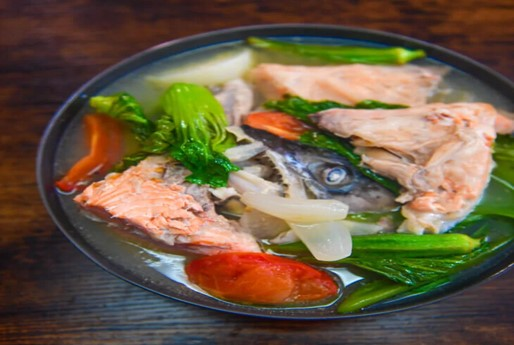

Fish Sinigang
What is Fish Sinigang?
Fish sinigang or sinigang na isda is a type of Filipino fish soup wherein fish is cooked in a sour broth together with a variety of vegetables. This version makes use of fried red snapper (also known as maya-maya).
Ingredients
2 lbs. salmon head
23 grams Knorr sinigang sa Sampaloc with Miso
1 bunch mustard leaves
1 daikon radish
3 long green peppers
2 tomatoes
8 okras
1 onion
3 cloves garlic
2 thumbs ginger
cooking oil
ground black pepper
water
fish sauce to taste
Instructions / How to Cook
1. Heat cooking oil in a cooking pot. Saute onion, garlic, and ginger.
2. Add the salmon once the onion softens. Pour the water and let it boil.
3. Add Knorr sinigang sa Sampaloc with Miso and daikon radish. Cover and continue cooking in low heat for 5 minutes.
4. Add okra, long green pepper, and tomatoes. Cook for 5 minutes.
5. Season with ground black pepper and fish sauce.
6. Add the mustard leaves. Cook for 2 minutes.
7. Transfer to a serving bowl. Serve hot.